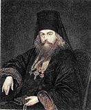

Saint Ignatius (in the world Dimitry Alexandrovich Brianchaninov) was born on February 6, 1807, on his father’s ancestral estate, the village of Pokrovskoye in the province of Vologda. His mother bore Dimitry after a long barrenness, in answer to fervent prayer and a pilgrimage to the holy places round about. The boy spent his childhood in the seclusion of country life; from his earliest years he was drawn, without knowing why, to the monastic life. As he grew, his religious disposition showed itself ever more plainly: it appeared in a particular love of prayer and of the reading of spiritual books.
Dimitry studied excellently, and until his very departure from the school he remained first in his class. His gifts were of the most varied kind — not only in the sciences, but in drawing and in music as well. Family connections brought him into the house of A. N. Olenin, president of the Academy of Arts; there, at the literary evenings, he became a favorite reader, and he soon made the acquaintance of A. Pushkin, K. Batyushkov, N. Gnedich, and I. Krylov.
But amid the noise and bustle of life in the capital Dimitry did not betray the longings of his soul. Seeking “an eternal possession for the eternal man,” he came little by little to a cheerless conclusion: the significance of learning is bounded by man’s earthly needs and by the limits of his life.
With the same zeal with which he had pursued the sciences, Dimitry set about the study of ancient and modern philosophy, striving to quiet his spiritual longing; but this time too he found no answer to the chief question of Truth and of the meaning of life. The study of Holy Scripture was the next step, and it convinced him that Scripture, left to the arbitrary interpretation of the individual man, cannot be a sufficient criterion of the true faith and leads astray into false teachings.
And then Dimitry turned to the study of the Orthodox faith in the writings of the holy fathers, whose sanctity, and whose wondrous and majestic agreement with one another, became for him the pledge of their trustworthiness.
Dimitry Brianchaninov attended the services at the Alexander Nevsky Lavra, and there he found true instructors who understood his spiritual needs. The decisive turn in his life was brought about by his meeting with the elder Leonid (later the Optina hieromonk Leo). Dimitry Brianchaninov left behind the brilliance and wealth of aristocratic life and, to the utter bewilderment of “society” and the displeasure of his parents, retired from the service in 1827. After spending some time as a novice in several monasteries, he received the monastic tonsure with the name Ignatius in the secluded Dionysius-Glushitsa monastery.
In January of 1832 the hieromonk Ignatius was appointed builder of the Lopotov monastery of Pelshma in the province of Vologda, and in 1833 he was raised to the rank of abbot of that monastery. Soon the emperor Nicholas I summoned Ignatius to Petersburg; upon the Highest recommendation and by decree of the Holy Synod he was ordained archimandrite and appointed superior of the Sergiev Hermitage.
Having lived twenty-four years at the Sergiev Hermitage, Archimandrite Ignatius brought it to a flourishing condition. On October 27, 1857, he was consecrated bishop of the Caucasus and the Black Sea. In the following year the Vladyka arrived in Stavropol, where great new labors awaited him; but a grave illness, smallpox, which befell him, prevented them. His Grace resolved to ask to be retired, and in 1871 he settled in the Nikolo-Babaevsky monastery. Here, free from the duties of office, he gave all his time until the end of his life († 1867) to work upon his spiritual writings.